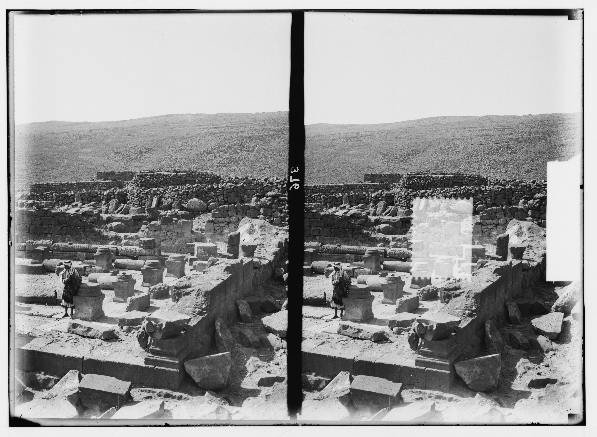

Chorazin Synagogue

- Find Name
- Chorazin Synagogue
- Description
- The black-basalt synagogue of the Jewish village of Chorazin, on a ridge above the Sea of Galilee. The standing synagogue (about 23 x 17 m) is built in Galilean style with three southern entrances facing Jerusalem, U-shaped benches, carved basalt decoration including figures and a Medusa head, and a Torah-ark area. Inside was found the famous basalt 'Seat of Moses', inscribed in Aramaic for its donor Yudan son of Ishmael — the seat from which the Torah reader taught. The original seat is in the Israel Museum; a replica stands at the site. Beneath the synagogue floor, recent excavation found an earlier public building with 1st-century pottery, Herodian lamps and coins of Herod Antipas, possibly the first-century synagogue. The village also has houses, an olive press, a ritual bath and a large cistern.
- Historical Period
- Roman–Byzantine
- Evidence Class
- Contextual
- Interpretations
- The site's identification with biblical Chorazin (Eusebius: two miles from Capernaum) is secure. The standing synagogue is dated late 3rd-early 4th century AD by most scholars (some argue 2nd century); it is not claimed to be the synagogue Jesus taught in. The earlier building beneath it is a promising candidate for the 1st-century synagogue, but that identification is not yet proven, and the recent under-floor finds are still being assessed.
- Alternative Names
- Korazim Synagogue; Khirbet Kerazeh Synagogue
- Related Places
- Related Books
- Related People
- Scripture Illuminated
- Biblical Significance
- Chorazin is one of the three Galilean towns Jesus pronounced woe upon for unrepentance despite His mighty works there (Matthew 11:21; Luke 10:13). Its synagogue — later than Jesus, but standing over what may be His generation's meeting house, with a literal Seat of Moses — makes His words about scribes sitting 'in Moses' seat' (Matthew 23:2) visible: authority, teaching and refusal, all in one basalt room.
- Artifact Date
- c. 1st century AD (village and possible earlier synagogue) - late 3rd/early 4th century AD (standing basalt synagogue)
- Current Location
- In situ, Korazim National Park, Israel
- Date Discovered
- 1905 (Schumacher); 1926 (Kohl and Watzinger); 1962, 1980-1984, 1988 (Yeivin, Netzer, Hirschfeld)
- Discovery Location
- Korazim (Khirbet Kerazeh), about 2.5 miles north of Capernaum, Galilee, Israel
- Timeline Era
- Life of Christ
Awaiting Review Not yet checked against scholarly sources. Treat its claims as provisional until this entry is reviewed. About verification
Last reviewed: not yet reviewed